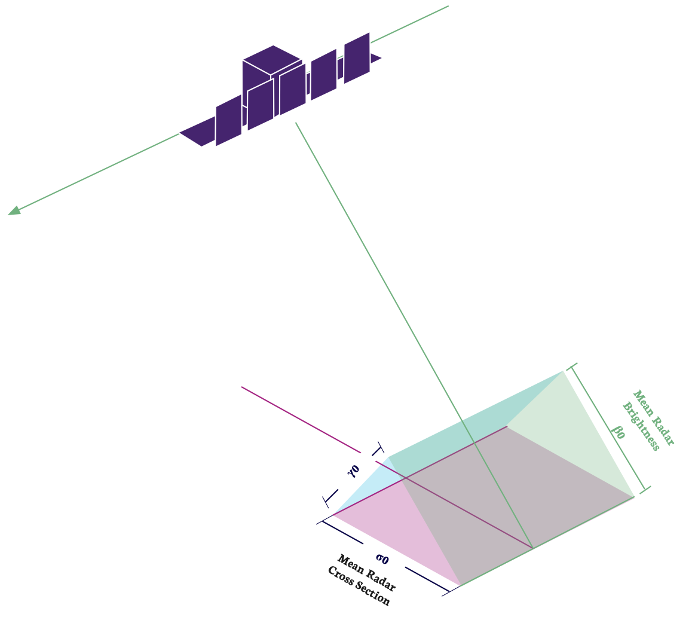

Radiometric Considerations
Calibration and Projection Conversion
The grey-scale values of SAR pixels do not directly correspond to a scientific measurement of the radar cross section of the associated ground area. In most cases this does not matter as users just want to view the spatial distribution of scattering objects and perhaps their relative radar reflectivity. However, SAR is a scientific instrument and some applications benefit from additional information about the ground's reflecting properties. These applications require the pixel’s mean radar cross section, which is a true measure of the radar reflectivity. To access this information, a calibration factor needs to be applied to the pixel data. This next section provides information on how this is done. First, however, we need to have a short discussion about mean radar cross section.
Caution
Scan mode products are not currently calibrated. Whilst imagery is visually and spatially exploitable, there may be slight errors when converting image sample values to a mean RADAR cross section number.
Different Types of Mean Radar Cross Section
An object's ability to scatter energy back towards the radar is called its radar cross section (RCS). It is not a fixed property and its value can change under different situations:
- The orientation of the object with respect to the RADAR
- The shape of the object
- The wavelength of the RADAR compared to the size of the object
- The ability of the object to reflect an electromagnetic field
- This is called the dielectric constant. Metal and water have high dielectric constants and reflect strongly, bare ground cover has much lower dielectric constant.
- Polarization of the radar energy
The RCS describes the relative reflecting cross-section of an object and its units are \(m^2\). RCS values are compared to the reference RCS of a hypothetical, perfectly-reflecting sphere with an area of 1 \(m^2\) (radius of 0.565 m) . RCS does not indicate the physical size of an object. For example, a metal plate with an area of 1 \(m^2\) oriented orthogonal to the incoming energy would have an RCS of 14,000 \(m^2\), while that of a small boat could be much less than 1 \(m^2\). The symbol for RCS is by convention \(\sigma\).
In the real world, though, there are usually multiple scattering objects within a resolution cell (and we almost never encounter a 1 m metal sphere). Since a pixel in a SAR image contains many hundreds of scattering objects, it has a mean RADAR cross section. To distinguish this from a single-object RCS we use the symbol \(\sigma_0\).

When illuminating the ground with a SAR sensor, the orientation of the surface compared to the resolution cell in the slant plane has a large impact on the mean RCS. The slant plane area of a pixel is constant, but when projected onto the ground, the pixel’s area is elongated in range, and the mean RCS changes with incidence angle. This leads to a 'brightening effect' at lower incidence angles in the slant plane image as each pixel's ground area increases. This means that the observed mean RCS values in the SLC image represent the RADAR brightness rather than the terrain mean RCS \(\sigma_0\). The RADAR brightness is denoted by \(\beta_0\).
Another noticeable and sometimes undesirable effect is that of local terrain topography. Terrain slopes that are oriented towards the satellite have a larger radar backscatter towards the RADAR than leeward slopes, which are inclined away from the radar and tend to reflect radar energy away. If the actual reflective properties of the terrain are needed, then this relief effect can be flattened to create a \(\gamma_0\) image.
The relationship between these three properties can be seen in Figure 1.
Calibration Correction
The radiometric and beam calibration of ICEYE's sensors is performed using wide-area and consistent reflections from Amazon and Congo forests, while point target sites are used for impulse response and geolocation calibration. The conversion to radar brightness (\(\beta_0\)) values is provided through the application of a calibration factor (CF) annotated as calibration_factor in the product metadata:
For amplitude scenes, a conversion to \(\sigma_0\) has already been applied using the incidence angle calculated from the ellipsoid model. This simplifies the calculation of the radar backscatter to :
If the processing of \(\beta_0\) is required from the amplitude image for further orthorectification to \(\sigma_0\) or \(\gamma_0\) values using a local DEM, then the conversion to radar brightness can be performed using the incidence angle information annotated in the metadata (see Ground Range To Incidence Angle Conversion).
(\(\gamma_0\)) values can be obtained using the \(\beta_0\) values and a local digital elevation model.
To assist in viewing analysis and projection, all amplitude products are projected onto the WGS84 Reference Ellipsoid.
Doppler Centroid Determination
ICEYE SAR images are zero-Doppler based. This means that image pixels are focussed to the zero-Doppler (or broadside) position. The radar beam covers a range of Doppler frequencies. Objects entering the beam have a high Doppler frequency and objects leaving the beam have a low Doppler frequency. This means that the centre point, called the Doppler Centroid (DC), can be used to find where the radar beam is pointing at any moment. The Doppler Centroid and the orbit state vector information are used to determine the precise azimuth location that the radar beam is pointing to.
A set of DC coefficients are provided in the image metadata. For each azimuth location, the DC dependence in range is described using a polynomial function. The polynomial is valid from the near to the far range of the scene. The DC coefficients can be obtained by fitting the DC dependence in range from time as:
where the reference point in time \(t_{ref}\) corresponds to the mid-range time, and time varies between \(t_{min}\) and \(t_{max}\) corresponding to near range (first pixel time) and far range, respectively. The mid-range time is calculated as:
where \(n_{rs}\) is the number of range samples, and \(f_{sr}\) is the range sampling rate.